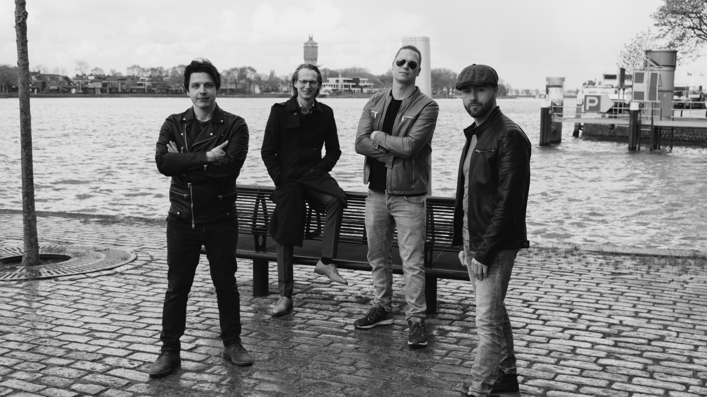
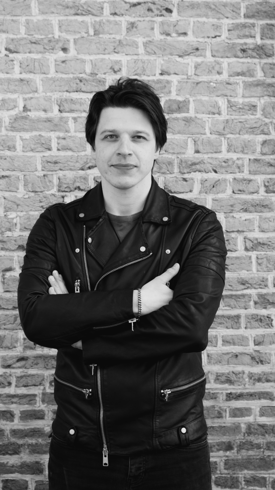
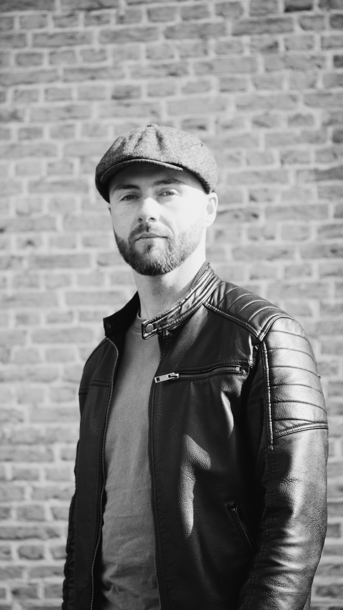

De Band

Terrizzi is een viertal uit het zuiden van Nederland — vier muzikanten met jarenlange ervaring, elk op hun eigen instrument en elk met een eigen achtergrond. Wat hen samenbracht was niet één toevallige ontmoeting, maar een gedeelde drang: spelen. Live, luid en zonder compromissen.
De liefde voor rockklassiekers zit bij alle vier diep verankerd. Van de grote Britse bands uit de jaren zeventig tot de Amerikaanse hardrock die stadions vulde — dat is het fundament waarop Terrizzi gebouwd is. Geen trucjes, geen playback, geen excuses. Wat je ziet is wat je krijgt: vier mensen op een podium die er volledig voor gaan.
Op dit moment werkt de band hard aan het voorbereiden van de eerste optredens, het schrijven van eigen materiaal en het vastleggen daarvan in de studio. De basis is gelegd. De rest volgt snel.
De leden


Boek ons
Wil je Terrizzi boeken voor jouw locatie, festival of evenement? Neem gerust contact op.